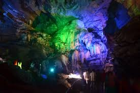

Borra Caves
Borra Caves are one of the largest and deepest caves in India, located in the Ananthagiri hills of the Araku Valley. Known for their stalactites and stalagmites formations, the caves are a significant tourist attraction and a geological wonder.
Location: Ananthagiri Hills, Visakhapatnam, Andhra Pradesh, India
Activities: Cave exploration, photography, sightseeing
Transportation: Accessible by road and train, located near Araku Valley railway station.